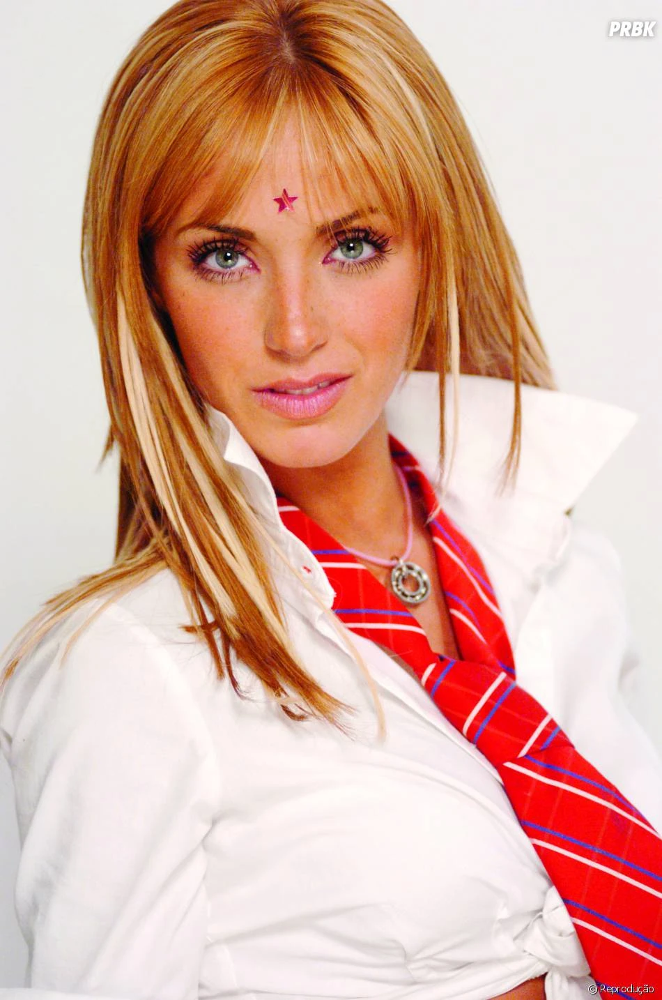

Bem-Vindo a pagina rbd +!
hístoria
RBD foi uma banda mexicana formada pelos protagonistas da novela "Rebelde", que fez sucesso de 2004 a 2009. O grupo, composto por Anahí, Dulce María, Maite Perroni, Christopher Uckermann, Alfonso Herrera e Christian Chávez, conquistou fãs com músicas sobre amor e juventude. Eles lançaram vários álbuns e realizaram turnês pelo mundo, tornando-se um ícone da música pop latina dos anos 2000. Após a separação, os membros seguiram carreiras solos, mas o legado de RBD continua vivo entre seus fãs. A estreia de RBD aconteceu com o álbum Rebelde (2004), que rapidamente alcançou sucesso nas paradas e consolidou a banda como um ícone da música pop latina. A seguir, lançaram discos como Nuestro Amor (2005) e Celestial (2006), que não só venderam milhões de cópias, mas também trouxeram uma série de hits como "Sálvame", "Rebelde" e "Ser o Parecer". As turnês internacionais do grupo levaram sua música a diversos países da América Latina, Estados Unidos e até Europa, conquistando fãs de todas as idades. Além do sucesso musical, o grupo se tornou uma verdadeira marca cultural, com seus integrantes se tornando ícones de moda e comportamento. A novela "Rebelde" e sua música ajudaram a definir uma geração inteira de jovens, que se viam refletidos nas histórias e nas canções do grupo. Mesmo após o fim da banda em 2009, cada um dos membros seguiu carreiras solo, mas o legado de RBD permanece vivo, com os fãs celebrando sua música até hoje, e o grupo sendo frequentemente lembrado como um dos maiores fenômenos da música pop dos anos 2000.

hístoria dos integrantes rbd Inscrever-se